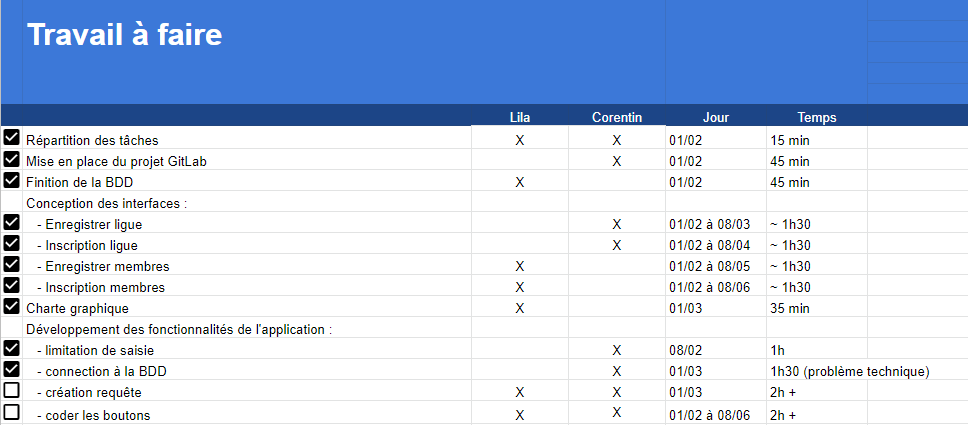

AP2.3 | M2L Site Statique
En résumé, les principaux objectifs de l'application M2L_JPO consistent à faciliter la gestion des inscriptions des ligues à la JPO, l'enregistrement des ligues elles-mêmes, ainsi que l'enregistrement et la gestion des membres participants.
Mise en commun avec le tableau de synthese
Gérer le patrimoine informatique
on a en tant que ressources numériques : cahier des charges, ébauche de la base de données et L’application jpo.sln, 1ère ébauche de l’application, contenant La fenêtre parent avec le menu principal, Les formulaires secondaires vides et La classe DbConnex à étudier et à compléter.
Travailler en mode projet
Grace au cahier des charges, une listes des taches nous a été donné. On les a donc analysés pour définir les ressources nécessaires puis on les a mis dans un tableau.
Grace au tableau et aux taches on a donc attribué ce que devait faire les personnes du groupe. Puis cela a permis de nous organiser et réaliser l’AP dans les temps.
En voyant le temps passé sur les taches, j’ai pu définir la difficulté de la tâche plus je passais du temps dessus plus elle était compliquée.

Mettre à disposition des utilisateurs un service informatique
Dans le contexte de la Maison des Ligues de Lorraine (M2L), le service à mettre à disposition grâce à l'application (M2L_JPO) serait la gestion des inscriptions des ligues et de leurs membres pour la Journée Portes Ouvertes des associations sportives.